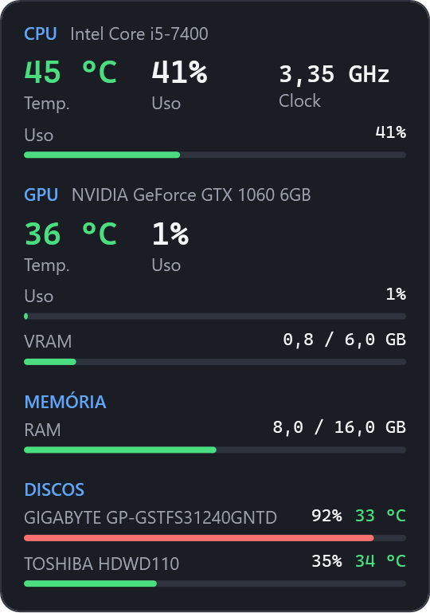

Os sinais vitais do seu PC, sempre à vista.
Pulso é um widget leve que mostra a temperatura e o uso da CPU, GPU, memória RAM e discos em tempo real, flutuando sobre a sua área de trabalho. Sem instalação: um único arquivo e pronto.

Tudo o que importa, num relance
Sem janelas cheias de gráficos: só os números que dizem se o seu PC está bem.
-
Temperatura em tempo real
CPU, GPU e discos com cores por faixa: verde, amarelo e vermelho. Você percebe o superaquecimento antes que ele vire problema.
-
CPU, GPU, RAM e discos
Uso, clock, VRAM e espaço em disco. Suporta Intel, AMD e NVIDIA.
-
Portátil de verdade
Um único Pulso.exe com tudo embutido. Leve num pendrive, rode e apague quando quiser.
-
Flutuante e discreto
Arraste para qualquer canto, deixe sempre no topo e ajuste a opacidade e a frequência de atualização.
-
Driver em um clique
Falta o driver para ler a temperatura da CPU? O Pulso instala o PawnIO pelo winget com um clique.
-
Open source
Código aberto no GitHub, feito com .NET e LibreHardwareMonitor. Sem anúncios e sem coleta de dados.
Como funciona
Do clique ao widget na tela em menos de um minuto.
-
Clique em “Abrir widget”
Na primeira vez, o navegador baixa o Pulso.exe automaticamente.
-
Abra o arquivo
Confirme a permissão de administrador. O widget aparece no canto da tela.
-
Pronto, das próximas vezes também
O Pulso se registra no Windows: o botão desta página passa a abrir o widget direto.
| Informação | Sem admin | Admin + driver PawnIO |
|---|---|---|
| Uso de CPU e memória RAM | ✓ | ✓ |
| GPU: uso, temperatura e VRAM | ✓ | ✓ |
| Temperatura e clock da CPU | — | ✓ |
| Discos: espaço e temperatura | — | ✓ |
Dúvidas frequentes
Preciso instalar o Pulso?
Não. O Pulso é um único arquivo Pulso.exe com tudo embutido, inclusive o .NET. Basta baixar e abrir.
Por que ele pede permissão de administrador?
A temperatura e o clock da CPU só podem ser lidos com acesso de administrador e o driver PawnIO, o mesmo usado pelo LibreHardwareMonitor. Se o driver não estiver instalado, o próprio Pulso oferece instalar com um clique.
O Windows mostrou “O Windows protegeu o computador”. É seguro?
Esse aviso do SmartScreen aparece para programas novos que ainda não têm assinatura digital. O código do Pulso é aberto e o executável é gerado automaticamente no GitHub a partir dele. Clique em Mais informações → Executar assim mesmo.
Funciona com AMD Ryzen e placas Radeon?
Sim. O Pulso usa o LibreHardwareMonitor, que suporta CPUs Intel e AMD e GPUs NVIDIA, AMD Radeon e Intel.
Como fecho ou configuro o widget?
Clique com o botão direito sobre ele: lá estão “Sempre no topo”, opacidade, intervalo de atualização, mostrar discos e “Fechar”.